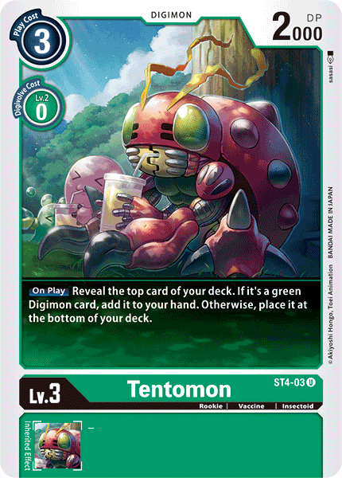

Level
Rookie
Tamer
Evolve from
Motimon
Evolve to
Kabuterimon
Type

Vaccine
Element

El tipo original de Digimon Insecto, que aunque tiene un caparazón muy duro, aun tiene baja agresividad. Tiene una garra dura en cada una de sus patas delanteras, y cuatro en cada uno de sus medianas y patas traseras, y, en particular, las patas medianas son capaces de captar hábilmente objetos al igual que una mano humana. Mientras que muchos otros tipos de insectos en su mismo nivel de evolución solo poseen el espíritu de lucha, Tentomon aún conserva sus sentimientos naturalmente amigables y muestra su manera despreocupada de la vida haciendo cosas como olfatear el aroma de las flores y dormitar a la sombra de un árbol. Su movimiento especial, que posee por si acaso, es lanzando electricidad estática que se amplifica con sus alas (Mini Trueno).